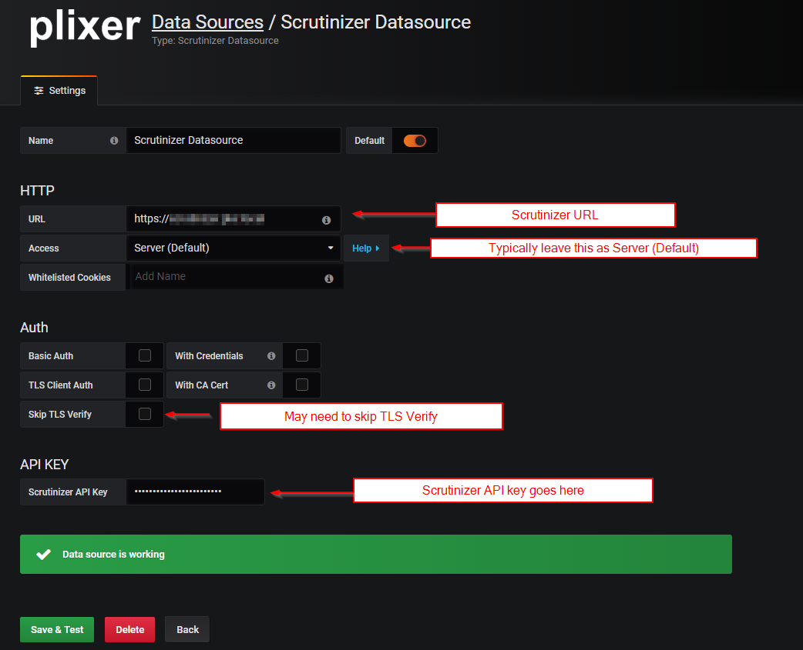
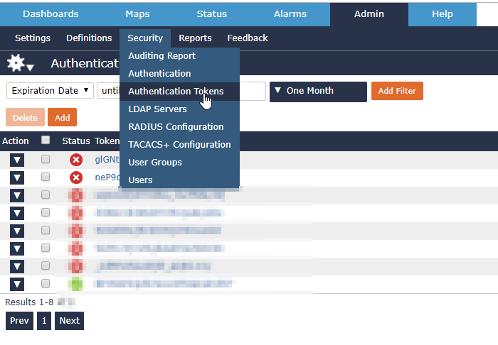
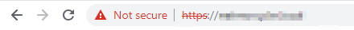
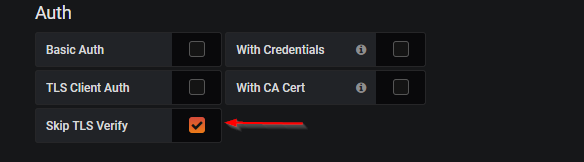

Setting up Scrutinizer Datasource¶
Fill out the required fields.
You can generate an authentication token within Scrutinizer by heading to the Admin Tab - > Security - > Authentication Token
If you are getting an error, one common problem can be your https certificate in Scrutinizer is selfsigned.
If this is the case make sure you check off the ability to skip tls verify.
